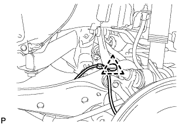
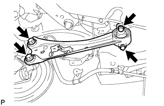

|
Remove the 2 bolts and disconnect the parking brake cable assembly NO.3 from the trailing arm assembly rear.
Trailing Arm Assembly Rear Removal |
| 1. Remove Rear Tire |
| 2. Disconnect Parking Brake Cable Assembly NO.3 |
|
Remove the 2 bolts and disconnect the parking brake cable assembly NO.3 from the trailing arm assembly rear.
| 3. Disconnect Skid Control Sensor Wire (Drive Type FF) |
 |
Disconnect the clamp.
 |
Remove the bolt and disconnect the skid control sensor wire.
| 4. Disconnect Speed Sensor Rear LH (Drive Type 4WD) |
 |
Disconnect the clamp.
 |
Remove the bolt and disconnect the speed sensor rear LH.
| 5. Disconnect Rear Suspension Arm Assembly NO.1 LH |
 |
Remove the bolt and nut, and disconnect the rear suspension arm assembly NO.1 LH from the rear suspension member assembly.
| 6. Remove Trailing Arm Assembly Rear |
 |
Remove the 4 bolts and remove the trailing arm assembly rear.